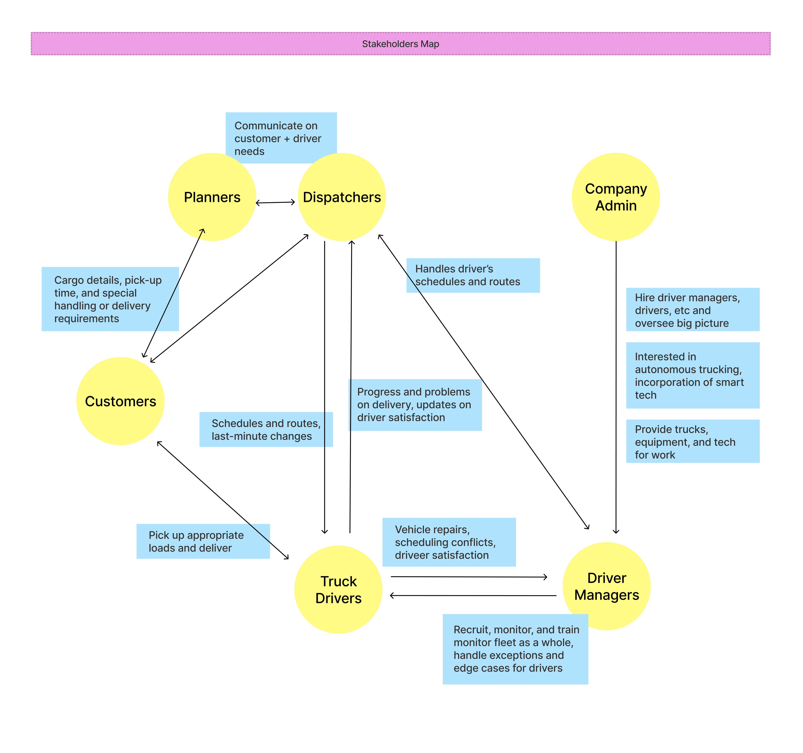
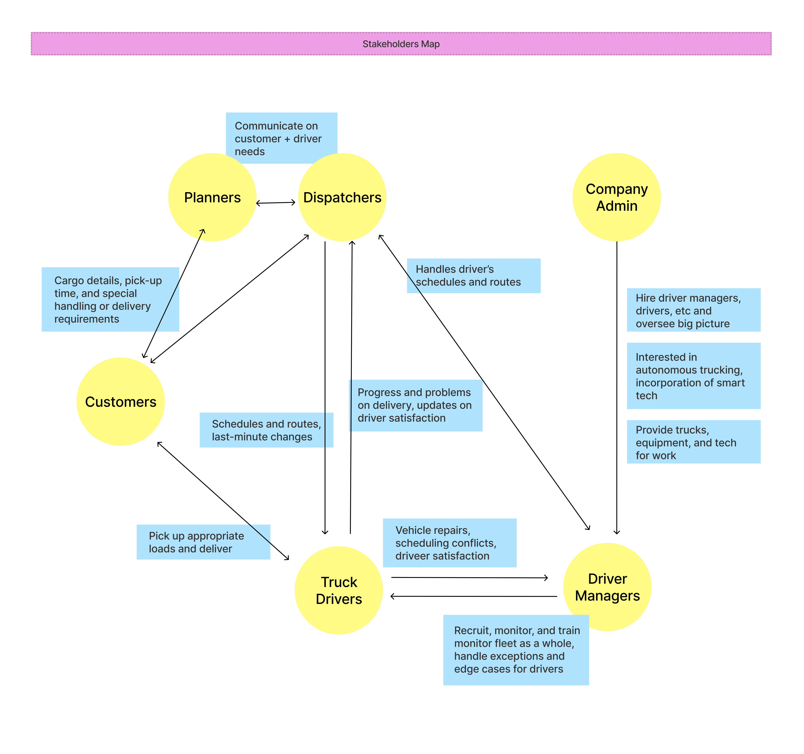

Mission Control Interface Design
Team: Meixuan Li, Eileen Lee, Ziyu Han
My Role: UI/UX Designer
Research
We first learned about the current state of trucking from Daimler.
 

Then, we considered how autonomous trucks will change the landscape of 4 different sectors of the trucking ecosystem.
Finally, we determined features needed for the mission control and met with Daimler people to confirm our design direction.
Prototyping

Reflection
While working on this project, we had lots of confusion and made many assumptions along the way (luckily, they were all confirmed at last). We did not get a clear expectation for the interface and could not meet with the client regularly. None of us had ever worked on a project with so much uncertainty and unknown, so we had many moments of frustration and helplessness while working towards the end goal. However, we learned a lot and did our best in this situation. We researched on our own and consulted other experts in the industry. We made sure to prepare a checklist and a list of questions before every meeting because we knew how valuable the opportunity was to meet with the client. Most importantly, I learned the importance of guiding our client on how to help us in the design process. I sincerely appreciated this opportunity. Not only did I gain experience working with a real-life client, but I also had amazing time with my group.